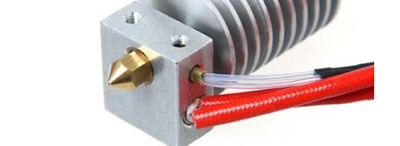

Clique sobre as áreas destacadas em vermelho

Aço carbono é a composição da liga que confere ao aço o seu nível de resistência mecânica. Oferece resultados excelentes para suas impressões profissionais, com precisão e confiabilidade.
Vidro temperado aquecido, resistente ao impacto da impressão e as temperaturas necessárias. Permitindo uma modelagem 3d de qualidade.
O Filamento Plástico PLA (Poliácido Lático) é um material totalmente biodegradável, produzido a partir de fontes naturais como milho e cana de açúcar. No processo de impressão 3D é o que apresenta o melhor resultado de impressão para peças de maior porte, além de respeitar melhor o dimensional da peça.